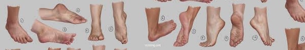
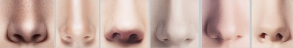
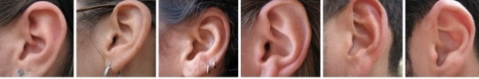
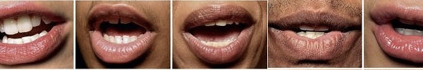

Metro Art & Decibel Present: Rival Consoles & John Tejada
LA Union Station
7:30pm - 10pm
FREE
Join Metro Art Los Angeles for an evening of immersive, spatial electronic music from Rival Consoles (Erased Tapes), local underground mainstay John Tejada (Kompakt Records), Tottie (dublab) and CLOAKING in collaboration with Decibel Festival.
LINK
Terry Riley's In C performed by David Harrow
Human Resources
8pm - 11pm
$5 suggested
1964: The year that Terry Riley first performed In C, the piece that laid the foundations for the entire minimalist movement, is also the year of my birth. Turning full cycle to the present, a time when contemporary synthesis has brought the principle of variation through repetition to our fingertips, reaching for the sublime through sonic immersion is needed more now than ever. The compositional quality of In C shines through the use of the new media, in fact the way the 53 phrases of the piece work with modern electronic is captivating. By programming them into contemporary sequencing methods new avenues for improvisation are revealed, manipulating the very substance of the sounds themselves.
LINK

SpAN's Inaugural Event: Railways, Waterways, and Walkways
start: Glendale Transportation Center
2:30pm - 7:30pm
A 6.5-mile walking exploration of some of Los Angeles’ best rail, storm, and pedestrian infrastructure — sometimes neglected, sometimes revitalized, always in flux. Several guest speakers will help us understand the past, present, and future of these places: Rafael Escamilla, muralist/artist — Trains Shaping History Noémie Despland-Lichtert & Brendan Shea, curators/designers/educators — Roundhouse Platform Jenny Aleman-Zometa, environmental scientist — LA River State Parks Partners Tom Carroll, journalist/interpreter — Tom Explores LA Fabian Wagmister, professor — UCLA REMAP Rosten Woo, artist/designer/writer/educator — This Park Is Made by People Cheri Gaulke, artist/educator — Woman’s Building The walk will begin at the Glendale Transportation Center and end at the LA State Historic Park. We recommend you take the 2:10pm Metrolink Antelope Valley Line train from Union Station to the start of the walk and the Metro Gold Line from Chinatown (or walk) back to Union Station after its conclusion.
LINK
EXHIBITION OPENING! Water & Power
The Underground Museum
4pm - 12am
$?
Noah Davis’ fourth exhibition curated from MOCA’s permanent collection features four seminal artworks by Olafur Eliasson, Hans Haacke, James Turrell and Fred Eversley that use natural phenomena as sculptural material, along with a poem installation by LA’s Poet Laureate, Robin Coste Lewis. The show is a meditation. Water. Flow. Woman. Moon. Aqueducts. Flint. Light. Climate. “Seeing yourself seeing”. Power. We’ve got an entire evening of vibes ready for your return. Food, conversation and DJ sets by Kita (@provokita), Bae Bae (@baexploitation), DJ Yum Yum and Lauren Halsey (@summaeverythang). We’re going all night!
LINK
SOFT BYTES; A FEMINIST ANIMATION FESTIVAL
Tiger Strikes Asteroid LA
7:30pm
FREE
This event is a product of our community by way of an open call for one-minute or less videos and curated works by AHC. Using Lucy Lippard’s “moving targets” as a theoretical starting point, our screening emphasizes intersectionality, a non-ableist and a democratized vision of our virtual selves. Soft Bytes considers the various ways our artists have encoded the habitual, reimagined myths, bodies and blurred reality within the realm of experimental animations, GIFs and VR. Our event includes an interactive video game by Gabbah Baya and AR installation by Feminist Pornographic Collective Consciousness (Echo Theohar, Xin Xin). Our screening includes works by, Alison Davis, Allison Zigadlo, Andrea Taylor, Anne Isensee, Ashley Lane, Blake Roten, Cassie Shao, Christina Ko, Cindy Miyashiro, Courtney Richter, Deveron Richard, Diana Rodriguez, Diane Lindo, Eden Mitsenmacher, Elizabeth Leister, Eubene Kim, Heather Scholl, Jay Martinovic, Jose Martin, Karen Hochman Brown, Kat Ball, Kate Sikorski, Kim Deleon, Linda Ravenswood, Maria Perez Ortega, Marilyn Schmidt, Marjan Vayghan, Michele Jaquis, Michiko Yao, Nicole Antebi, Paris Baillie, Rachel Finkelstein, Sarah Julig, SL Benz, Stephanie Medeiros, Tavarus Blackmonster, Tracy Miller-Robbins, Vi Ha and Virginia Jeffery. Longer works by Gyuri Cloe Lee’s “National Gymnastics,” Gail Lewis’ Meowy for Max, Maria Bustillos’ “Nature Stories,” Breesha Wynn’s “Ice Force,” and Sarah Telkamp’s “You’ll be Back.”
LINK
221: Disturbingly Lively
Betalevel
8pm - 12am
$?
Inobe+Dirtbag/ Scallion/Ma+Matsumoto+Escobar. Inobe (Voice, Glove Controller) + Dolly Dirtbag Olivia Hauser (Electronics, Glove Controller). Genre bender R&B and Southern Soul vocalist Inobe joins forces with Music Technology Extraordinaire Olivia Houser for the piece INFINITY GLOVE. Transfuturist disseminator Miss Scallion will present a set for electronics and voice. Duo MA (Ma, Matsumoto) collaborate on an improvised trio with Escobar. Fluctuating between the primordial and the current, the aim is to explore the sonic connections of the multiple syncretic sound (voice + koto).
LINK

Acid Camp with Physical Therapy, Michael Magnan, Stacy Christine b2b Mike ETC.
TBA
2pm - 10pm
$10/$15
We’re well into spring and your bodies yearn for a little dancing therapy. As a remedy for your ailments we’ve enlisted two of NY’s finest music shamans to guide your aching soul through a journey of refreshment and renewal. Join us on Sunday, May 20th, as Allergy Season label head, Physical Therapy (Fatherhood / Allergy Season), and the second half of Fatherhood, Michael Magnan (Fatherhood / Fruits And Vegetables), bring us together for an energy exchange of epic proportions. Paired with a double dose of local love, Stacy Christine & Mike ETC.
LINK
Promote, Tolerate, Ban: Art and Culture in Cold War Hungary AND Socialist Flower Power: Soviet Hippie Culture
The Wende Museum
12pm - 5pm
FREE
12pm - Curator-led exhibition tour; 2pm - Panel Discussion: Collecting the Cold War in Hungary and Russia; 3 pm - Opening Reception. Hungarian-born photo historian Michael Simon speaks about the obstacles he surmounted to collect Hungarian art photography and photojournalism. Historian Juliane Fürst explores intriguing aspects of late Soviet counterculture through her stories about gaining access to former Soviet hippies and collecting their archives.
LINK
Modular On The Spot
North Atwater Park
3:30pm
FREE
Modular On The Spot is a pop-up modular synth concert in a park. Bring a blanket, some snacks and a friend.
LINK

ARTSTUFF.WTF is a minimal website listing page for selected mostly DIY art (and etc) events going on around Los Angeles. It is a personal list of 5 - 10 events sent out to friends weekly, and made available online here for bookmarking and quick reference. There is an archive of past listings. Sign up to receive weekly emails. Made by Lee Tusman.
